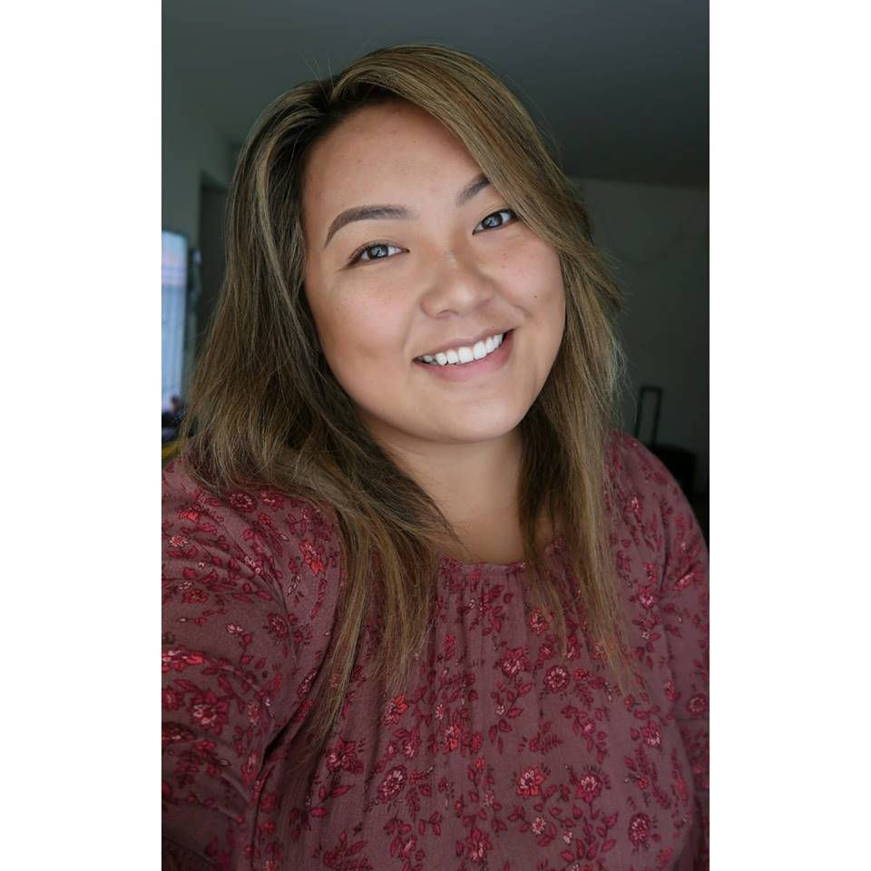

about me
My name is Nkau Yer Lor but you can simply call me Yer. I am 100% Hmong and I am from Wisconsin. I come from a family of 10, 4 brothers, 3 sisters, my parents and myself. I have a great big family! 15 nieces and nephews altogether.
As of right now, I currently attend the University of Wisconsin Stevens Point and will be a Junior, Spring of 2019. I am hoping to graduate in the Fall of 2020. I am a Human Technology Interaction major with a minor in Computer Information Systems.
So what started my interest in makeup? Well I never knew what it was when I grew up until when I was in middle school. My mom started to wear makeup and my sister in law started getting into makeup too. So I started to learn what it was but never really touched on the topic of it. When I hit highschool, I started seeing other girls wear makeup and such. I began looking at youtube videos and googling good makeup brands and such. However, I was still young, had no job to buy myself makeup and just used my sister in law's or my mom's makeup. I began watching Michelle Pham, a Youtuber and entrepreneur now. I then jumped all around and now my favorites that I keep up to date are Jaclyn Hill, Christin Dominique, Heart Defensor, and Gina. I remember my very first high end pallete was the Two Faced Natural Matte eyeshadow pallete and I was so in love with it.
Makeup is not just a cover up, it's art.